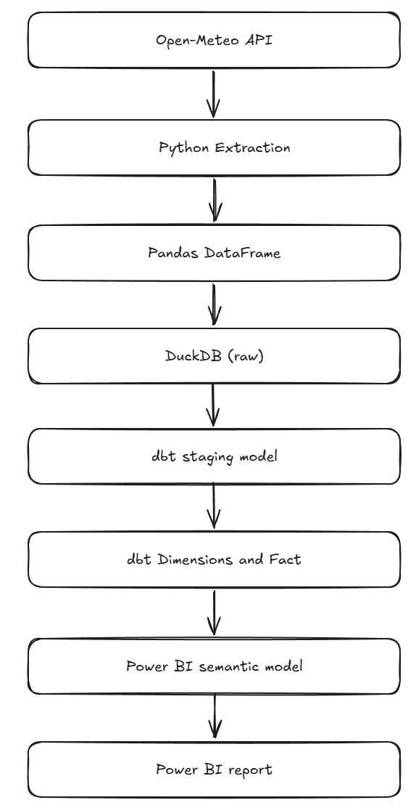
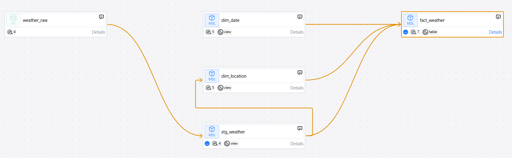
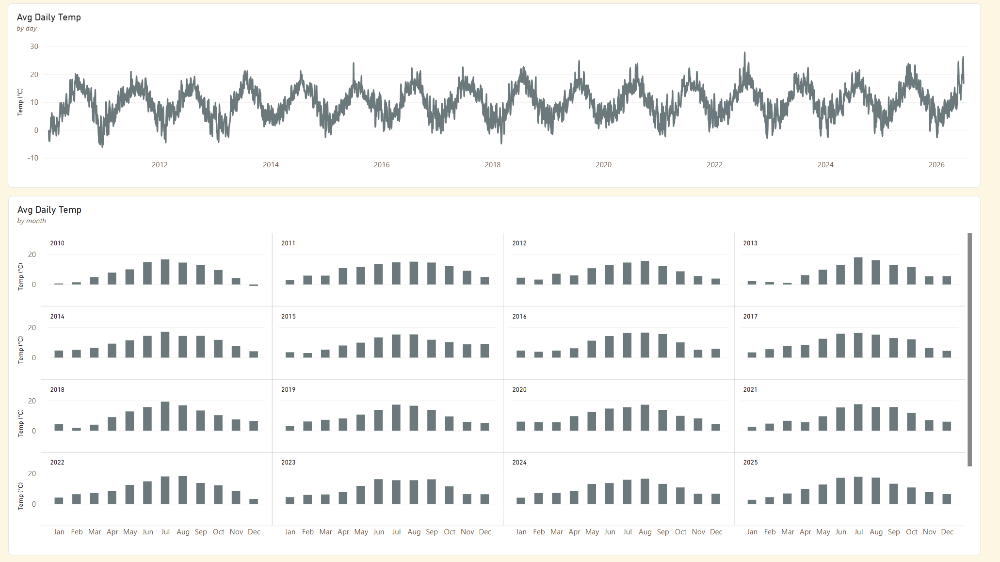
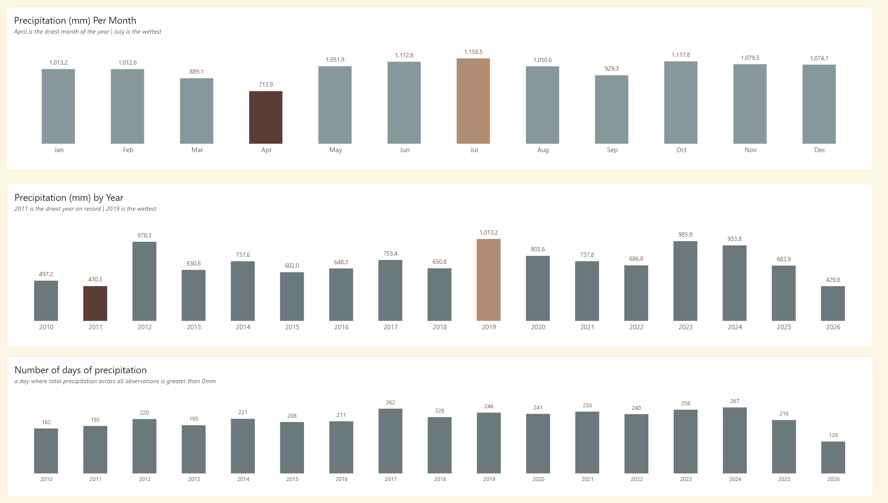
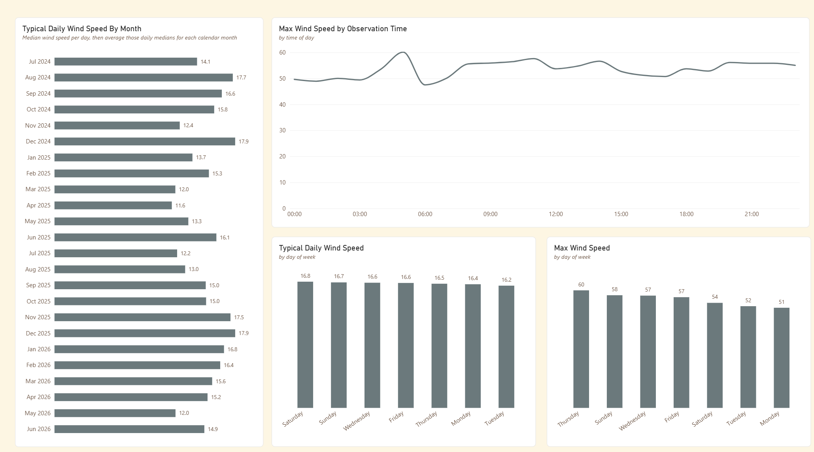

1. Objective
The objective was to design and build an end-to-end analytical data pipeline, starting with a public API and ending with a dimensional model suitable for reporting and analysis.
The project was deliberately designed to explore the engineering decisions involved in creating a reliable analytical data pipeline. Decisions such as where data should be validated, how transformations should be layered, how the model should be structured and evolve, how testing, documentation and version control contribute to maintainability and data trustworthiness.
2. Source Data
The source data was the public Open-Meteo API containing details of weather observations from various locations.
3. Architecture
The architecture was layered from source to ingestion to presentation in the following manner:

3.1 Data Warehouse
The data warehouse was set up in DuckDB, a file-based analytical database. The architecture was designed to have a raw layer, a staging layer and a dimensional model layer.3.2 Transformation Layer

3.3 Presentation Layer



4. Key Elements
- Raw weather observations obtained via a public API (Open-Meteo).
- Python scripts control the API request.
- API JSON responses are converted into a tabular Pandas DataFrame.
- Validation is performed in Python prior to loading to identify unexpected or invalid data.
- Validated data loaded into DuckDB as the weather_raw source table.
- Raw data transformed and loaded into the dimensional model using dbt models.
- Star schema designed with dimensional attributes and a central fact table.
- Surrogate keys are generated for all dimensions.
- dbt tests implemented to validate data quality.
- Final dimensional model consumed by Power BI.
- Development followed a Git-based workflow with the dbt project maintained in GitHub.
5. Technologies
The technologies used were as follows:
- Python / Pandas: API ingestion and validation
- DuckDB: Analytical database
- dbt Core: transformation, testing and documentation
- SQL: transformation and modelling
- Git / GitHub: version control
- Visual Studio Code: development environment
- Power BI: semantic model and visualisation
6. Challenges
The project raised a number of engineering questions around validation, transformation, dimensional modelling, surrogate keys and analytical requirements. The most significant decisions are summarised below.
Why validate before loading?
To prevent unexpected API responses from entering the raw data warehouse layer.
Why separate staging from dimension models?
To isolate raw data from business logic and provide a clean interface between the two layers.
Where should transformations occur?
Transformations were implemented in the dbt layer, separating data extraction and transformation logic from the final analytical model.
How should dimension keys be generated?
Deterministic surrogate keys were chosen rather than volatile row-number-based keys so that certain attribute values retain the same surrogate key value across all loads.
Why use dbt?
To make transformation logic explicit and inspectable, version controlled, testable and documented.
Why Power BI only at the end?
To show that reporting consumes the analytical model rather than containing the transformation logic.
How did analytical requirements affect the model?
The dimensional model evolved iteratively as I used it to build the Power BI analysis.
For example, analysis by month of year and time of day exposed requirements that weren't initially apparent, resulting in new attributes such as month_year, month_year_sort and observation_time being added to the model.
This meant the reporting requirements influenced the analytical model rather than being solved through logic in the Power BI reporting layer.
7. What I Learned
The biggest learning from the project was that the difficult part of analytics engineering isn't writing the SQL. It's deciding where the transformations belong, what each layer should do and how the resulting model should behave for its downstream consumers.
The project deliberately used a lightweight, code-first approach so that the ingestion, transformation and modelling decisions remained visible and inspectable.
8. Key Skills Demonstrated
| Area | Skills |
|---|---|
| Data Ingestion | Python API requests, Pandas DataFrames |
| Data Warehousing | Kimball dimensional modelling |
| SQL | DuckDB SQL |
| Analytics Engineering | dbt Core |
| Data Quality | Source and model tests |
| Documentation | dbt Docs |
| Version Control | Git / GitHub |
| Reporting & Visualisation | Power BI |
| Development | VS Code |